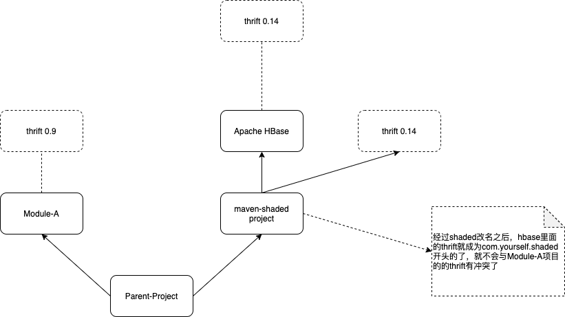

maven shade模式解决两个版本的冲突是比较常用的解决方案，特别在A模块引用了两个B模块和C模块，但是B和C的引用的两个jar包的版本不一致，导致冲突，而且两个版本的jar包不兼容，还必须要都保留，这种情况下，如果其中一个模块是自己能够控制的，则可以通过shaded模式，把其中这个模块在pom文件中把这个jar包改名即可，但是，如果两个模块都不是自己控制的呢？那应该怎么办呢？能不能对一个不是自己控制的里面的jar包进行改名呢？
对于这个问题呢，文章解决ja 包冲突的神器：maven-shade-plugin给出了一个一个解决思路，但是没有给出例子，本文给出一个例子。
Thrift 0.9版本和0.14版本是不兼容的，有些项目使用了thrift 0.9版本，有些项目使用了0.14版本，而且都必须存在，比如Apache HBase，使用了0.14版本。我们的项目还必须要引用HBase，还要使用一个别的项目，我们假设此项目是Module-A，Module-A使用的thrift 0.9版本。我们能不能把Apache HBase的thrift给改名呢？其模块引用如下所示：
下面， 我们就看如何给Apache HBase引用的thrift进行改名。
我们创建一个空的maven工程，起名为maven-shaded，里面引用hbase，并且把hbase和hbase引用的thrift改名为com.yourself.shaded为前缀的jar包。pom文件如下所示：1
2
3
4
5
6
7
8
9
10
11
12
13
14
15
16
17
18
19
20
21
22
23
24
25
26
27
28
29
30
31
32
33
34
35
36
37
38
39
40
41
42
43
44
45
46
47
48
49
50
51
52
53
54
55
56
57
58
59
60
61
62
63
64
65
66
67
68
69
70
71
72
73
74
75
76
77
78
79
80
81
82
83
84
85
86<?xml version="1.0" encoding="UTF-8"?>
<project xmlns="http://maven.apache.org/POM/4.0.0"
xmlns:xsi="http://www.w3.org/2001/XMLSchema-instance"
xsi:schemaLocation="http://maven.apache.org/POM/4.0.0 http://maven.apache.org/xsd/maven-4.0.0.xsd">
<modelVersion>4.0.0</modelVersion>
<groupId>org.example</groupId>
<artifactId>maven_shaded</artifactId>
<version>1.0-SNAPSHOT</version>
<properties>
<maven.compiler.source>8</maven.compiler.source>
<maven.compiler.target>8</maven.compiler.target>
<shading.prefix>com.yourself.shaded</shading.prefix>
</properties>
<dependencies>
<dependency>
<groupId>org.apache.thrift</groupId>
<artifactId>libthrift</artifactId>
<version>0.14.1</version>
</dependency>
<dependency>
<groupId>org.apache.hbase</groupId>
<artifactId>hbase-thrift</artifactId>
<version>2.5.0</version>
</dependency>
</dependencies>
<build>
<plugins>
<!-- 指定项目java编译版本 -->
<plugin>
<groupId>org.apache.maven.plugins</groupId>
<artifactId>maven-compiler-plugin</artifactId>
<configuration>
<source>1.8</source>
<target>1.8</target>
</configuration>
</plugin>
<plugin>
<!-- 使用maven-shade-plugin进行打包 -->
<groupId>org.apache.maven.plugins</groupId>
<artifactId>maven-shade-plugin</artifactId>
<version>3.2.4</version>
<executions>
<execution>
<phase>package</phase>
<goals>
<goal>shade</goal>
</goals>
<configuration>
<createDependencyReducedPom>false</createDependencyReducedPom>
<relocations>
<!-- 重新定义包路径 -->
<relocation>
<!-- 匹配路径和重新定义的包路径 -->
<pattern>org.apache.hadoop.hbase</pattern>
<shadedPattern>${shading.prefix}.org.apache.hadoop.hbase</shadedPattern>
</relocation>
<relocation>
<!-- 匹配路径和重新定义的包路径 -->
<pattern>org.apache.thrift</pattern>
<shadedPattern>${shading.prefix}.org.apache.thrift</shadedPattern>
</relocation>
</relocations>
<filters>
<filter>
<artifact>*:*</artifact>
<excludes>
<exclude>META-INF/*.SF</exclude>
<exclude>META-INF/*.DSA</exclude>
<exclude>META-INF/*.RSA</exclude>
</excludes>
</filter>
</filters>
</configuration>
</execution>
</executions>
</plugin>
</plugins>
</build>
</project>
执行如下命令打包，就可以打包出一个已经把HBase中的thrift名字修改完的jar包。1
mvn clean package

我们可以打开这个打包好的jar包验证一下，如上图所示，可以看到HBase和Thrift都已经改名为com.yourself.shaded为前缀的jar包，同时，我们打开HBase里面import的thrift源码，如下所示，看到hbase引用的thrift的包名也已经修改了。
经过上述maven shaded改名操作之后，我们把HBase里面的thrift包名已经修改了，后续我们自己的项目Parent-Project想引用HBase之后，就可以通过引用我们刚才打包的maven-project间接来引用hbase了，其引用关系如下所示：

至此，
参考文献
[1] 解决 jar 包冲突的神器：maven-shade-plugin https://www.playpi.org/2019120101.html?from_wecom=1